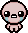
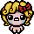
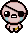

the saac

Mag

Cain

The binding of isaac é 10/10 no mediatok sendo visto como representação de múltiplas personalidades e como isso causa um transtorno de identidade na cabeça de um ser que deveria ser puro (uma criança).